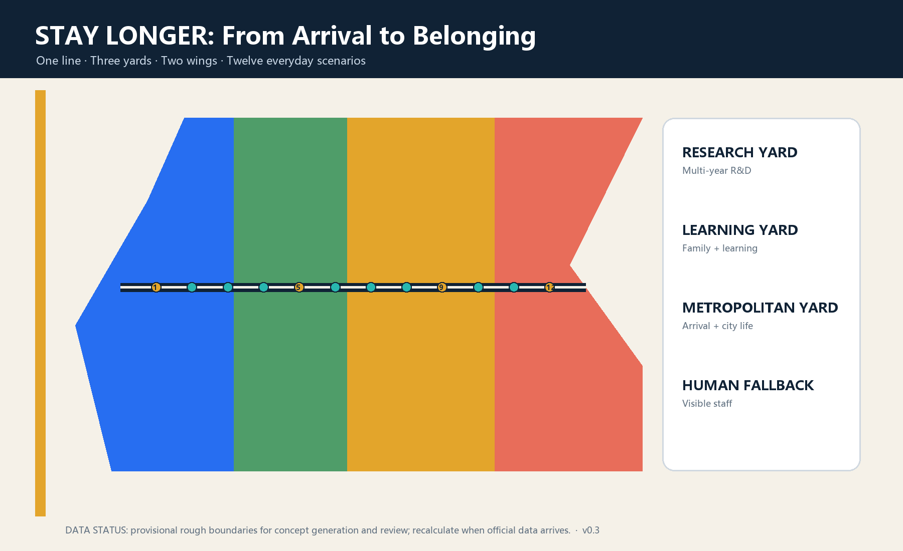

Three-level scope
43.6 sq km strategy / approx. 11.4 sq km design / three provisional key areas
Let AI talent build an ordinary life with dignity

43.6 sq km strategy / approx. 11.4 sq km design / three provisional key areas
Research Living Yard · Origin Learning Yard · Metropolitan Living Yard
Research, care-learning, global service and living-support concept zones
One Long-Stay walking spine; engineering alignments await official data
Seating, water, shade, winter sun, accessibility and quiet corners first
Retain, adapt, reversible addition, pending construction; service first
Announcement sections 1.3/1.4/1.5 and agent.1-agent.6 map to narrative, geometry, metrics, drawings and matrices. The package must pass deterministic, spatial, visual and professional-evidence checks.
Sources: announcement, site package, Agent taskbook, standards snapshots and six official case pages; see sources.json.
Assumptions: official boundaries, controls, ownership, buildings, utilities, heritage and service capacity are pending.